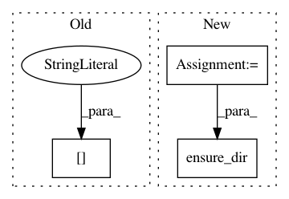

5cc55a742a1230dd87d803d4c9127cd945c9db83,autokeras/pretrained/face_detector.py,FaceDetector,load,#FaceDetector#Any#,618
Before Change
def load(self, model_path=None):
for model_link, file_path in zip(Constant.FACE_DETECTION_PRETRAINED["PRETRAINED_MODEL_LINKS"],
Constant.FACE_DETECTION_PRETRAINED["FILE_PATHS"]):
download_file(model_link, file_path)
self.pnet, self.rnet, self.onet = Constant.FACE_DETECTION_PRETRAINED["FILE_PATHS"]
After Change
self.scale_factor = 0.709
def load(self, model_path=None):
temp_path = temp_path_generator()
ensure_dir(temp_path)
for model_link, file_path in zip(Constant.FACE_DETECTION_PRETRAINED["PRETRAINED_MODEL_LINKS"],
Constant.FACE_DETECTION_PRETRAINED["FILE_NAMES"]):
download_file(model_link, f"{temp_path}/{file_path}")
In pattern: SUPERPATTERN
Frequency: 3
Non-data size: 3
Instances
Project Name: jhfjhfj1/autokeras
Commit Name: 5cc55a742a1230dd87d803d4c9127cd945c9db83
Time: 2019-01-07
Author: yashwanth95tuniki@gmail.com
File Name: autokeras/pretrained/face_detector.py
Class Name: FaceDetector
Method Name: load
Project Name: flow-project/flow
Commit Name: 6acd781f6d5ff89971039a0ee21e38d63ebcd1b8
Time: 2017-04-20
Author: kanaadp@gmail.com
File Name: cistar-dev/cistar/core/base_env.py
Class Name: SumoEnvironment
Method Name: __init__